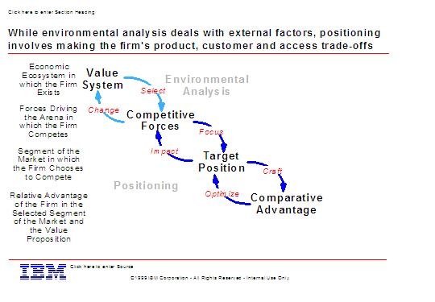

| Artifact: Strategic Market Position (BUS 325) |
 |
|
The purpose of the Strategic Market Position is to select a strategic position that provides competitive advantage for the company. This involves making trade-offs to choose:
It also provides the basis for configuring the capabilities and resources. Once a valued position is identified, the capabilities required to create, capture and sustain value would be identified and assessed against current capabilities and to those of competitors.  |
| Main Description | The analysis of the company's competitive space in the industry is usually along three dimensions: products/services (offerings), customers and access. The customer view is driven from customer needs and wants analysis (from CVM). Other analytics such as Advantage Curves can, and should when possible, be used to analyze an offering from a customer need and cost/margin perspective in relation to competitor offerings. Positioning is selecting the segments to serve and determining a unique mix of value that the firm intends to deliver which will differentiate it from its competitors. Positioning involves making a selection at two levels:
A clearly defined position creates competitive advantage by:
Other techniques such as the BCG Growth/Market Share Matrix can also be utilized. |
|---|---|
| Brief Outline |
|
| Notation | There are several types of notation:
|
| Examples |
|---|
Strategic Positions should be driven by targeting customer needs and wants and then viewed against competition in terms of offerings and access. Ensure that the strategic position provides an adequate statement of where the enterprise stands relative to the marketplace, competition, and best practice that will be acceptable to senior management. Check that appropriate managers and specialists have been involved in its formulation. If there are gaps in the coverage, understand why, communicate to client and determine if gaps are important. Gaps may lead to additional scope of work. Senior management must agree with the positioning as a basis for more detailed analysis and definition when later developing capability models. Senior Management should review all pertinent positions and decide which ones they want to investigate further within the scope of the strategy engagement. Also they should review any issues raised and decide how they want to address them. The resolution of these issues may be critical to the strategy; others may have an impact on the outcome of the assignment. Other issues may have no impact on the strategy but management may wish to address them outside the scope of the engagement. Rely on senior industry, functional and technical specialists for competitive and market sector information. Because of the executive interaction, it requires this experience for credibility. Often they will not be basing their findings on detailed analysis, but on judgement and experience applied to sparse information obtained from research, a small number of executive interviews and/or workshops. The use of internal specialists at this stage will help build their support and commitment to the strategy. It is particularly important to gain confidence of management at this early stage in a strategy engagement, and to seek their views on how best to proceed, offering some alternatives. The final strategy will be theirs to implement, and, as such, their involvement and commitment to the process and the outcome is essential. Special care must be given with individuals who feel threatened in any way by the engagement, particularly business unit managers as they will be more heavily involved in capability definition and requirements. Only produce the briefest documents as summaries of the key findings. |
| Impact of not having | Without this work product, there would be no increase in the understanding of markets and which ones represent opportunities for transformation. |
|---|---|
| Reasons for not needing | Some aspect of this work product should always be required for a "strategy" engagement. Even if not created by IBM, we would use the one created by the client or by another consulting firm. |
| Guidelines | |
|---|---|
| Estimation Considerations |
| © Copyright IBM Corp. 1987, 2012 All Rights Reserved Property of IBM These materials are intended only for use as part of an IBM engagement |